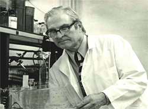

|
Lesson11 : マススクリーニングの歴史
11-1 マススクリーニングの歴史
「新生児マススクリーニング」を語るためには、米国のロバート・ガスリー博士（1916-1995年）のことから始めなくてはなりません。日本で新生児マススクリーニングが本格的に始められたのは1977年ですが、それからしばらくは新生児マススクリーニングそのものが、「ガスリー法」とか「ガスリー検査」などと呼ばれていました。この言葉は、ガスリー博士が世界で初めて新生児マススクリーニングを開始し、またそれを全世界に普及させるために一生を捧げたためにそう呼ばれるのです。 新生児マススクリーニングは、フェニルケトン尿症（Phenylketonuria、PKU）という先天性代謝異常症を、生まれてすぐ発見し、すぐ治療しよう（早期発見・早期治療）という目的で始められました。 |
 ガスリー博士 |
ガスリー博士自身は、細菌学者でありがんの研究で成果を上げていました。しかし、1956年に生まれた5人目の子である次男のJimが精神発達遅滞であることがわかり、それ以後彼は精神発達遅滞の研究に転じました。
フェニルケトン尿症（PKU）は体の中のフェニルアラニンという必須アミノ酸（体内で合成できず、栄養分として摂取しなければならないアミノ酸）がうまく代謝されずに異常に増え、脳に障害を与えることにより精神発達遅滞などを起こす病気です。血液中のフェニルアラニンの値が高くなり、その代謝産物（フェニルピルビン酸）が尿中に出ると、その尿は塩化第二鉄で緑色に変化するため、最初は尿による新生児マススクリーニングが行われました。しかし、新生児の尿を採ることは非常に面倒で、しかも塩化鉄反応による検出が不確実であったため、より鋭敏で正確な方法が求められていました。
- 濾紙（ろし：液体を浸し、こす紙のこと）に新生児の血液を採取しそれを乾燥させ保存しても、その中のフェニルアラニンを測定できるという「新しい検体採取方法」と、
- 濾紙血中のフェニルアラニンを大量に簡便に迅速に測定する、bacterial inhibiton assay （BIA）法という安価でかつ迅速に多数検体を測定できる「新しい検査方法」
を組み合わせることでした。この、濾紙に血液を滴下し乾燥させてその中の微量な物質を測定するという方法は、ガスリー・カードとして普及し、フェニルアラニン以外の様々な物質の測定へと応用されていきます。
ガスリー・カードは、今日では、新生児マススクリーニング以外の成人の集団検診にも応用範囲が広がり、胃がんのスクリーニング（ペプシノゲン法）なども始まっています。
ガスリー博士によるフェニルケトン尿症（PKU）の新生児マススクリーニングは1961年に最初に発表され、1963年により詳しい方法が「Pediatrics」という米国小児科学会雑誌に載りました。
この報告以後、米国では多くの州が法律によりフェニルケトン尿症（PKU）の新生児マススクリーニングを始め、1970年までに44州で法律が制定されるに至りました。
フェニルケトン尿症（PKU）は白人に多く、その頻度は平均して11,000人に１人といわれます。しかし、日本では110,000人に1人と10分の1の頻度とされています。
これに対し、先天的に精神発達遅滞を引き起こす病気の中で最も頻度が高い病気である「先天性甲状腺機能低下症（クレチン症）」は、ヨード欠乏のない地域では、世界中どこでもほぼ6,000〜7,000人に１人（当時のデータ）とされ、その早期発見の方法の開発が望まれていました。
11-2 クレチン症スクリーニングの歴史
Jean-H Dussault 博士(1941-2003)が、世界で初めてクレチン症の新生児マススクリーニングを大規模に行った方です。
Dussualt博士は乾燥血液濾紙中の甲状腺ホルモン（T4：サイロキシン）を測定することに成功し、1973年からカナダのケベック地区で予備的なスクリーニング（pilot
screening）を行い、49,000人の新生児から7名のクレチン症を発見しました。 こういった経緯を経て、日本では1979年10月から公的なクレチン症マススクリーニングが開始されたのです。 |
Dussualt博士 |